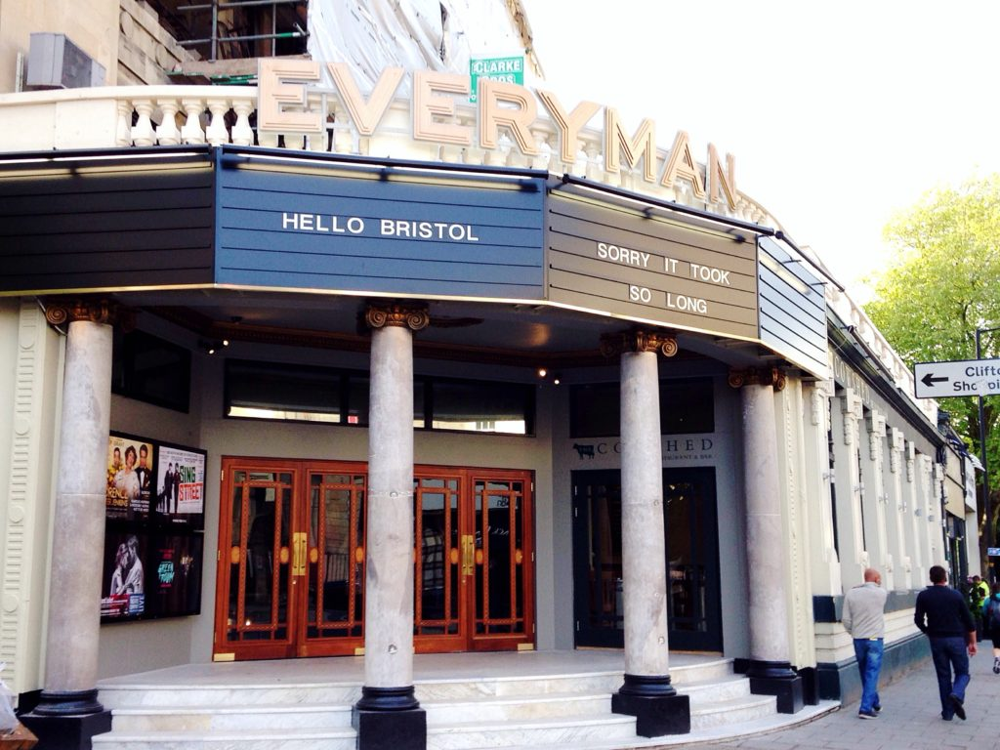
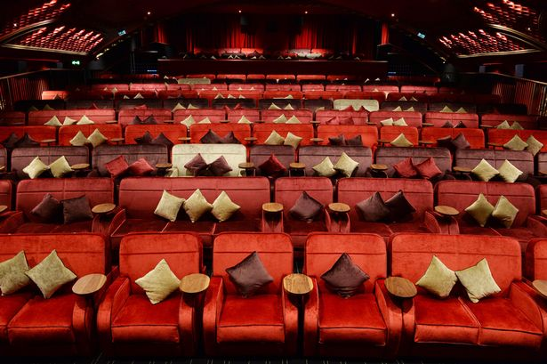
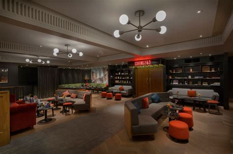

The Everyman Cinema
With Bristol's unreliable weather, the Everyman is the perfect place to take shelter. One of the fanciest cinema's you will ever come across, enjoy a cocktail from the comfort of your own sofa. Welcoming guests since 1921, the beautiful building creates a great atmosphere for relaxing and watching a movie.
1 / 3

The Everyman Entrance
2 / 3

The Everyman Seating
3 / 3

The Everyman Bar
❮
❯